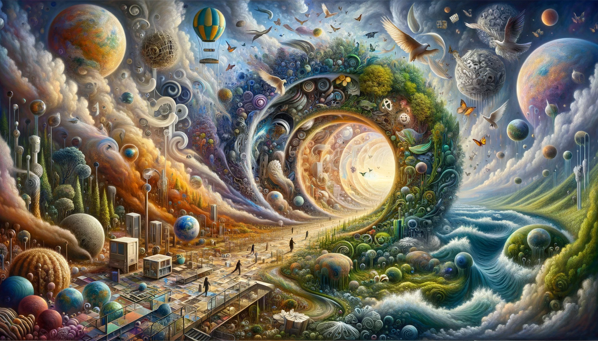
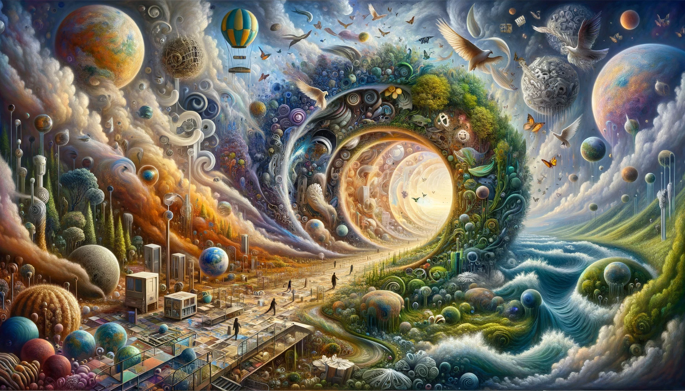

A Tapestry of Ideas

 


Artistry with Purpose
At the core of Muso Kokushi's artistry is a commitment...
Journey Through the Surreal
- Echoes of Gaia - A tribute to Earth's raw beauty...
- Urban Anomaly - Juxtaposing nature and metropolitan marvels...
- Whispers of the Future - Envisioning tomorrow, where sustainability...
Muso Kokushi - The Visionary Weaver
Meet Muso Kokushi, the mind and soul behind these digital odysseys...
Own a Piece of the Odyssey
Embrace the opportunity to not only appreciate but also own a piece...
Join the Dialogue
Step into the conversation and become a part of the surrealist movement...